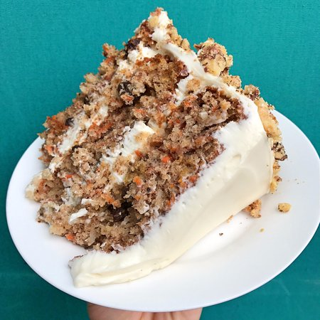

Carrot cake

The ultimate moist and delicious carrot cake.
Ingredients
- 3 cups of all-purpose flour
- 1 tablespoon baking powder
- 1 1/2 teaspoons baking soda
- 1 tablespoon ground cinnamon
- 1 teaspoon salt
- 3 cups lightly packed shredded carrots (I used about 4 large ones)
- 1 1/2 cup canned juice-packed crushed pineapple, drained
- 1 cup coarsely chopped toasted walnuts
- 1 cup sweetened shredded coconut
- 6 eggs
- 3 cups granulated sugar
- 2 teaspoons vanilla extract
- 2 cups vegetable oil
- 1 batch of your favourite cream cheese frosting
Steps
- Preheat oven to 325 degrees F. Grease and flour two 9-inch cake pans. Line the bottom with rounds of parchment paper.
- In a medium bowl, whisk together the flour, baking powder, baking soda, cinnamon and salt. Set aside. Toss the raisins with the remaining tablespoon of flour. Set aside.
- In a medium bowl, toss together the shredded carrots, pineapple, toasted walnuts and coconut.
- In a stand mixer with the paddle, beat together the eggs and sugar on medium speed for 2 minutes, or until light and thick. Add the vanilla and oil and beat well. Scrape down the bottom and sides of the bowl.
- On low speed, gradually add the flour mixture, mixing until just barely incorporated. Remove the bowl and scrape down the bottom and sides. Use a spatula to fold and mix the batter until no streaks of flour remain.
- Fold in the carrot mixture.
- Evenly divide the batter between the prepared pans. Bake for 50 to 60 minutes, or until a cake tester inserted in the center comes out clean.
- Let the cakes cool. Transfer them to a cooling pan and apply frosting evenly.